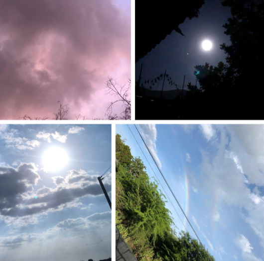

My Obsession with the Sky
Septempber 24, 2025 by Shanel
Honestly, I don’t have an exciting story about how I started liking the sky—I just do 🤷🏾. There’s something so calm, peaceful, and beautiful about it. Even now, I still love pointing out the funny shapes the clouds make. I find comfort, and even joy, in just looking up. What I love most is taking pictures of the sky—capturing its subtle movements and freezing them in time, almost like keeping proof of how it looked on a particular day. Sunrise, sunset, cloudy skies, or even a clear, empty blue—I find them all beautiful. There’s just something about that blue hue that I can’t get enough of.
It’s not just me there are so many people out there who love the sky and find even more ways to enjoy it than I do with my pictures. You have the adrenaline junkies who go paragliding or parachuting, and I’m sure even astronauts have a thing for the sky. Then there are people who worship it, astrologers who read the stars, and of course, the zodiac signs (Go Virgos!). A beautiful sunset might mean something completely different to someone else, but at the end of the day, we both find meaning in the sky and probably love it just as much. I’m also glad I get to enjoy the variety of the tropical sky—so many colors and moods because some people only ever get one kind of sky. Imagine living in a place with no night sky… oh lord.